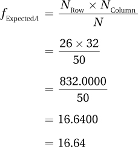

15.3 Calculating the Chi-Square Test of Independence
There’s a second chi-square test to learn about, the chi-square test of independence. Like the chi-square goodness-of-fit test, it uses nominal data (or higher-level data treated as categorical), but it is not a single-sample test. The chi-square test of independence is a nonparametric test that answers the question of whether two or more samples of cases differ on some nominal-level variable. For example, comparing a sample of boys to a sample of girls to see if the nominal variable of having an eating disorder differs between the two sexes calls for a chi-square test of independence. The chi-square test of independence is also known as the chi-square test of association or the chi-square test for contingency tables.
582
This chi-square test is called a test of “independence” because it answers the question of whether two variables are related to each other or are independent. The chi-square test of independence functions like a difference test (“Do the sexes differ in the prevalence of eating disorders?”) and like a relationship test (“Is there a relationship between sex and the presence of an eating disorder?”). This shows that though relationship tests and difference tests may look different, at their core they are the same.
To learn how to conduct a hypothesis test with a chi-square test of independence, imagine the following example: An educational psychologist, Dr. Pradesh, wants to explore whether a student reads a textbook before or after class has an impact on how well he or she does in that class. Dr. Pradesh puts together a random sample of 50 students from introductory psychology classes at her university, then randomly assigns 26 to read the textbook chapters before class and the other 24 to read them after the lectures. At the end of the semester, the students’ grades are classified as high (A or B) or low (C, D, or F). The question she asks can be phrased as a relationship question (“Is there a relationship between when one reads the text and how well one does in the class?”) or a difference question (“Does class performance differ depending on when one reads the text?”). These two questions are really the same and both are appropriate for a chi-square test of independence.
Table 15.7 shows the results of Dr. Pradesh’s study. The matrix in Table 15.7 is called a contingency table, because it shows how the values of the cases on the dependent variable depend on the category of the independent variable. This table illustrates the degree to which students’ grades are contingent on when they read the text. It is also called a cross-tabulation table because it indicates how the levels of one variable intersect with the levels of the other variable.
There are four cells in this table and each student fits in only one cell. Following convention, the independent variable (when the text is read) is the row variable and the dependent variable (high or low grade) is the column variable. Here is what each of the four cells tallies:
583
Cell A counts the students who were in the “read before” group and received a high grade.
Cell B counts the students who were in the “read before” group and received a low grade.
Cell C counts the students who were in the “read after” group and received a high grade.
Cell D counts the students who were in the “read after” group and received a low grade.
Contingency tables allow researchers to calculate and compare percentages. 20/26 students who read the text before class (76.92%,) received high grades compared to only 12/24 who read the text after class (50.00%). This difference, 76.92% vs. 50.00%, suggests that reading the text before class makes it more likely one will receive a high grade. However, is the difference statistically significant? To answer that question, Dr. Pradesh needs to use a hypothesis test.
Step 1 Pick a Test
This scenario involves comparing two groups (read text before class vs. read text after class) to see if a difference exists for a variable used to categorize people as good performers vs. poor performers. This calls for a chi-square test of independence.
Step 2 Check the Assumptions
The three assumptions for the chi-square test of independence are the same as for the chi-square goodness-of-fit test:
Random samples. The samples should be random samples from their populations. The random samples assumption is a robust assumption. If it is violated, one can proceed with the chi-square test of independence, but must be careful about the population to which the results are generalized. In the example, the participants in the read before class vs. read after class study are a random sample from introductory psychology classes who are then randomly assigned to the two groups. The random samples assumption was not violated and the results can be generalized to intro psych classes at this university.
Independence of observations. The cases in the sample should be independent of each other. That is, the same case can’t be in the sample twice. The independence of observations assumption is not robust, so one can’t proceed with the planned test if it is violated. In the example, who was in which group was up to chance thanks to random sampling and random assignment, and each student fits in only one cell. The independence of observations assumption was not violated.
Expected frequencies. All cells must have expected frequencies of at least 5. This assumption is not robust, so the chi-square can’t be calculated if the expected frequencies in the cells are small. Until expected frequencies are calculated, this assumption can’t be evaluated.
Step 3 List the Hypotheses
The chi-square test of independence tests to see if two variables are independent. Two variables are independent of each other when no relationship exists between them. So, the null hypothesis for a chi-square test of independence states that the two variables are independent of each other in the population. The alternative hypothesis for a chi-square test of independence states that, in the population, the two variables are not independent of each other. Notice several things about the alternative hypothesis:
584
It doesn’t say what direction the relationship goes, whether one variable has a positive or negative impact on the other.
It doesn’t say whether the relationship between the two variables is small or large.
It just says there is something other than a zero relationship between the two variables in the population.
The simplest way to express the null and alternative hypotheses for the chi-square test of independence is the same way they were expressed for the Pearson r, using ρ, the abbreviation for the population value of a correlation, to say whether there is a relationship between the variables:
H0: ρ = 0
H1: ρ ≠ 0
Step 4 Set the Decision Rule
Setting the decision rule for a chi-square test depends on the alpha level and the number of degrees of freedom (df ). For the read before class vs. read after class experiment, Dr. Pradesh was willing to have a 5% chance of making a Type I error, so she set α = .05.
Determining df for a chi-square test of independence depends on how many rows (R) and how many columns (C ) are in the contingency table. Look back to Table 15.7:
There are two rows, one for the students who read the text before class and one for the students who read the text after class, so R = 2.
There are two columns, one for students with high grades and one for students with low grades, so C = 2.
Equation 15.4 uses R (the number of rows in the contingency table) and C (the number of columns in the contingency table) to calculate the degrees of freedom for a chi-square test of independence.
Equation 15.4 Formula for Degrees of Freedom (df) for a Chi-Square Test of Independence
df = (R – 1) × (C – 1)
where df = degrees of freedom
R = number of rows in the contingency table
C = number of columns in the contingency table
For the textbook reading data, there is 1 degree of freedom:
df = (R – 1) × (C – 1)
= (2 – 1) × (2 – 1)
= 1 × 1
= 1
585
Now that the degrees of freedom are known, Dr. Pradesh can find the critical value of chi-square in Appendix Table 9. The intersection of the column where α = .05 and the row where df = 1 shows that χ2cv = 3.841. If the value of chi-square calculated for the data in the sample is greater than or equal to this critical value, then the results will fall in the rare zone, the null hypothesis is rejected, and the results are called statistically significant. If χ2 is less than χ2cv , then χ2 falls in the common zone, the null hypothesis is not rejected, and the results are called not statistically significant. Here is the decision rule:
If χ2 ≥ 3.841, reject H0.
If χ2 < 3.841, fail to reject H0.
Step 5 Calculate the Test Statistic
χ2 for a chi-square test of independence is calculated with the same formula (Equation 15.3) used to calculate a chi-square goodness-of-fit test. Here it is again.
Equation 15.3 Formula for Calculating Chi-Square (χ2)
where χ2 = chi-square value
fObserved = observed frequency for a category
fExpected = expected frequency for a category
To apply the formula, two values are needed for each cell: (1) the observed frequency, fObserved, and (2) the expected frequency, fExpected. The contingency table in Table 15.7 gives the observed frequencies for the cells, so those are known. Finding the expected frequencies takes Equation 15.5.
Equation 15.5 Formula for Calculating Cell Expected Frequencies (fExpected)
where fExpected = the expected frequency for a cell
NRow = number of cases in the row with that cell
NColumn = number of cases in the column with that cell
N = total number of cases in the contingency table
This formula says that the expected frequency for a cell is found by multiplying together the N for the row that contains the cell by the N for the column that contains the cell. This product is then divided by the total sample size.
Dr. Pradesh applies Equation 15.5 to the read before class vs. read after class data. From Table 15.7, the following is known:
For the first row, NRow = 26. For the second row, NRow = 24.
For the first column, NColumn = 32. For the second column, NColumn = 18.
N = 50.
586
Using Equation 15.5 to calculate the expected frequency for Cell A finds:

Continuing to use Equation 15.5, the expected frequencies for the other three cells are found in a similar way.

587
The four expected frequencies are shown in Table 15.8. There are five things to note:
Expected frequencies don’t have to be whole numbers. Don’t be bothered by saying, for example, that 16.64 cases are expected to fall in the read before/get high grades cell.
The row frequencies for the expected frequencies (Table 15.8) are exactly the same as those found for the observed frequencies (Table 15.7).
Similarly, the column frequencies for the expected frequencies are the same as the column frequencies for the observed frequencies.
Finally, the total number of cases in the expected frequency cells is the same as the total number of cases in the observed frequency cells.
All the expected frequencies were at least 5, so Dr. Pradesh now knows that the third assumption was not violated.
A Common Question
Q Does one have to use Equation 15.5 to calculate an expected frequency for each cell?
A No. Equation 15.5 is only needed to calculate expected frequencies for as many cells as there are degrees of freedom. For the read before class vs. read after class study, where df = 1, once the first cell is known, the other three can be figured out. If the frequency for the first row is 26 and fExpected = 16.64 for Cell A, then Cell B must have an expected frequency of 26 – 16.64, or 9.36.
Now that the expected frequencies have been found, Equation 15.3 may be used to calculate χ2. Using the observed frequencies for the read before class vs. read after class data (see Table 15.7) and the expected frequencies (see Table 15.8), the formula finds χ2 = 3.93:
588
The value of the test statistic, χ2, for the text-reading data is 3.93. After some more practice with the first five steps, we’ll move on to the sixth step of hypothesis testing, interpretation.
Worked Example 15.2
Imagine an elementary school teacher, Mr. Conaway, who is a follower of Carl Rogers and believes that unconditional positive regard leads to psychological health and positive behavior. He obtains a simple random sample of 40 children from other teachers’ classrooms at his school and, through home observation, he categorizes each child as receiving unconditional positive regard (1) frequently, (2) sometimes, or (3) rarely. He then has each child’s teacher classify the child as a behavior problem or not.
The contingency table for the relationship between the two variables—the grouping variable of frequency of unconditional positive regard and the dependent variable of being a behavior problem—is shown in Table 15.9:
Five of the 15 frequent recipients of unconditional positive regard (33.33%) were behavior problems.
589
Five of the 13 sometimes recipients of unconditional positive regard (38.46%) were behavior problems.
Eight of the 12 students who rarely received unconditional positive regard (66.67%) were behavior problems.
These results are graphed in Figure 15.4, which shows that the likelihood of being a behavior problem increases as the frequency of receiving unconditional positive regard decreases. To determine if this is a real effect—or can be explained by sampling error—Mr. Conaway will need a statistical test.
Step 1 Pick a Test. A chi-square test of independence is appropriate to determine if there is a relationship between three categories of one variable (frequency of receiving unconditional positive regard) and two categories of another variable (behavior problem or not a behavior problem) in a sample of elementary school children.
Step 2 Check the Assumptions. There are three assumptions for the chi-square test of independence:
Random samples. The cases come from a number of classrooms at the school, but it is not stated that the sample is a random sample. The random samples assumption is violated, but it is robust so the teacher can still proceed with the chi-square test of independence. However, he should be careful about generalizing the results beyond this sample.
Independence of observations. Each child is in the sample only once, so this assumption is not violated.
Adequate expected frequencies. All cells must have expected frequencies of at least 5. Until the expected frequencies are calculated, one can’t be sure that this assumption is met. If it turns out not to be met, one could collapse some categories and, for example, the frequent recipients of unconditional positive regard could be compared to a combined group of the sometimes and rare recipients of unconditional positive regard.
590
Step 3 List the Hypotheses. The hypotheses are listed below. The null hypothesis says that no relation exists in the population between the amount of unconditional positive regard one receives and the likelihood of being a behavior problem. The alternative hypothesis states there is some relationship in the population.
H0: ρ = 0
H1: ρ ≠ 0
Step 4 Set the Decision Rule. To set the decision rule, a researcher needs to know the alpha and degrees of freedom. Mr. Conaway has set alpha at .05. He uses Equation 15.4 to calculate the degrees of freedom:
df = (R –1) × (C – 1)
= (3 – 1) × (2 – 1)
= 2 × 1
= 2
Looking in the table of critical values of chi-square, Appendix Table 9, at the intersection of the column for α = .05 and the row for df = 2, he finds χ2cv = 5.991. The decision rule is:
If χ2 ≥ 5.991, reject H0.
If χ2 < 5.991, fail to reject H0.
Step 5 Calculate the Test Statistic. The first step in calculating a chi-square test for independence (χ2) is using Equation 15.5 to calculate expected frequencies. This contingency table has six cells and it is a bit tedious to perform Equation 15.5 six times. So, Mr. Conaway will use a bit of logic and just use Equation 15.5 twice. Why twice? Because the contingency table has 2 degrees of freedom, and once two cells are known, the rest can be calculated. The two to be calculated have to be chosen a little carefully, so Mr. Conaway has picked Cells A and C.
591
Table 15.10 contains the results so far. Now comes the logic.
If the first row has a total of 15 cases and Cell A has 6.75 of them, then Cell B contains 15 – 6.75 cases, or 8.25 cases.
The same logic applies to Cell D: 13 – 5.85 = 7.15 cases.
To find the expected frequency for Cell E, look at the total number of cases in the column, 18. Subtracting the expected frequencies for Cells A and C from this yields the expected frequency of 5.40 for Cell E.
Finally, for Cell F, subtract Cell E (5.40) from 12, the total number of cases in the row to find 6.60.
The expected frequencies for all six cells are shown in Table 15.11. Note that all the expected frequencies are greater than 5. Mr. Conaway can finally determine that the remaining assumption, that all expected frequencies were large enough, was not violated. The expected frequencies, in conjunction with the observed frequencies (Table 15.9), are needed to calculate the value of the test statistic using Equation 15.3:
592
The chi-square test of independence value for the unconditional positive regard study is 3.33. Now it is time to learn how to interpret the results of a chi-square test of independence.
Practice Problems 15.2
15.06 Given a chi-square test of independence where the explanatory variable has four categories and the dependent variable has three, (a) How many degrees of freedom are there? (b) If α = .05, what is χ2cv?
15.07 Given the cell frequencies below, calculate (a) the row totals and (b) the column totals.
| 5 | 10 | 12 |
| 5 | 8 | 10 |
15.08 The row and column totals are shown below. Calculate the expected frequencies for the cells.
| A | B | 39 |
| C | D | 49 |
| 28 | 60 |
15.09 Given the information below, calculate χ2.
| fObserved = 50 | fObserved = 36 |
| fExpected = 47.22 | fExpected = 38.78 |
| fObserved = 45 | fObserved = 42 |
| fExpected = 47.77 | fExpected = 39.23 |